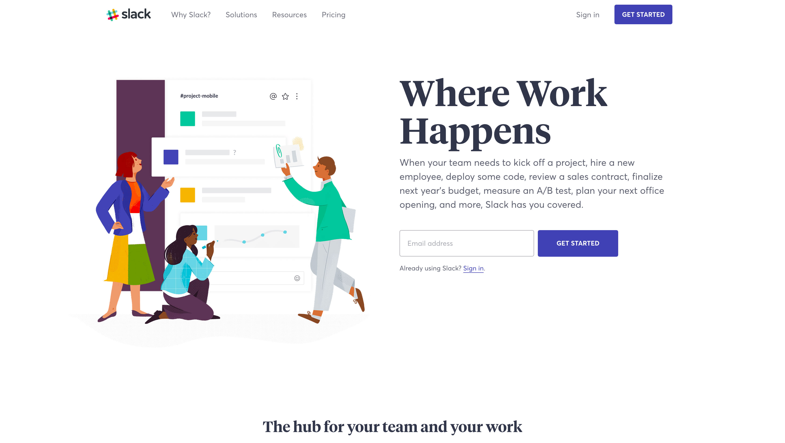
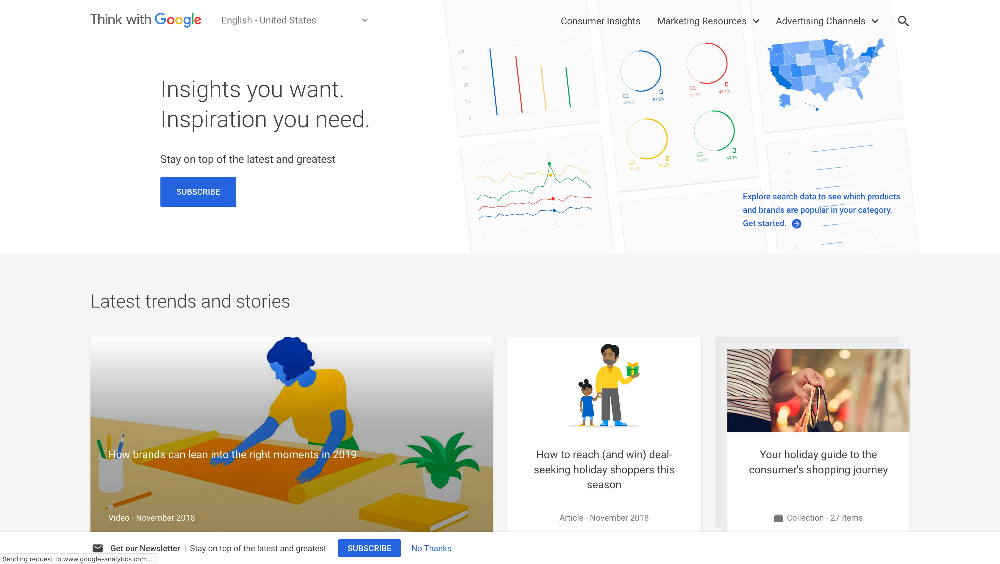

Responsive web design (RWD) is a web development approach that creates dynamic changes to the appearance of a website, depending on the screen size and orientation of the device being used to view it.
By following a RWD approach, we can adapt the same web documents to the multitude of devices available, ranging from tiny phones to huge desktop monitors. This is the easiest and more affordable way to target multiple devices.
On the technical side, we need to define the viewport on HTML and work with media queries and flexible media through CSS (yes, we'll get there soon) but most important is to know how the content and the structure of the page will adapt.
Example: Slack
Example: Google
- What happened with the content blocks?
- What happened with the font sizes?
- What happened with the images?
How does it work
- We give the device the content and the structure with HTML
- We tell how to display and style it with CSS
- We ask the device the screen size (and/or device type and/or orientation) and tell it what to change.
For example, we have a blog. On the main page we show the content (the last 10 posts) and the extras (a list of the most popular ones and a few widgets).
To make this page responsive, we need to ask the device: if you are a laptop or bigger, please (always important to be nice) display the content and the extras side by side. Take 2/3 for the content and 1/3 for the extras.
If you are a tablet or phone, display the extras below the content and use the full width of the screen for each.
In css, the first part could be
#main-page {
display: flex;
}
#main-page #content {
width: 66%;
}
#main-page #extras {
width: 34%;
}
On the second case, it could be
#main-page {
display: flex;
flex-direction: column;
}
#main-page #content,
#main-page #extras {
width: 100%;
}
Which takes us to... media queries.
Learn more
- Responsive Web Design - What It Is And How To Use ItSmashing Magazine
- Responsive Web DesignAlistapart
- Design examplesMediaqueri.es